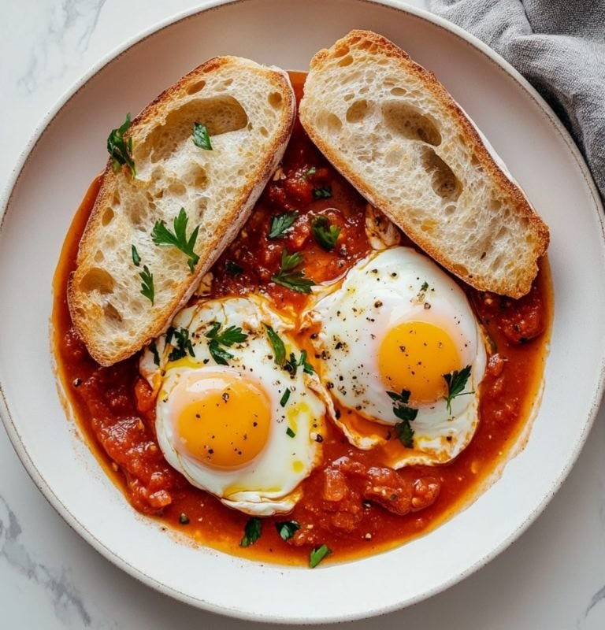

Shakshuka

Ingredients:
- 4 eggs
- 1 onion (finely chopped)
- 2 cloves garlic (minced)
- 1 red bell pepper (chopped)
- 4 medium tomatoes (chopped) or 1 cup canned tomato
- 1 tsp paprika
- ½ tsp cumin
- Salt & black pepper to taste
- 2 tbsp olive oil
- Fresh parsley for garnish (optional)
Preparation👨🍳:
- In a skillet, heat olive oil. Sauté onion until soft.
- Add garlic and bell pepper. Cook until slightly tender.
- Add tomatoes and spices. Simmer for 10–15 minutes until thickened.
- Make small wells and crack eggs into them.
- Cover and cook until eggs are just set (soft or firm as preferred).
- Garnish with parsley. Serve with bread.